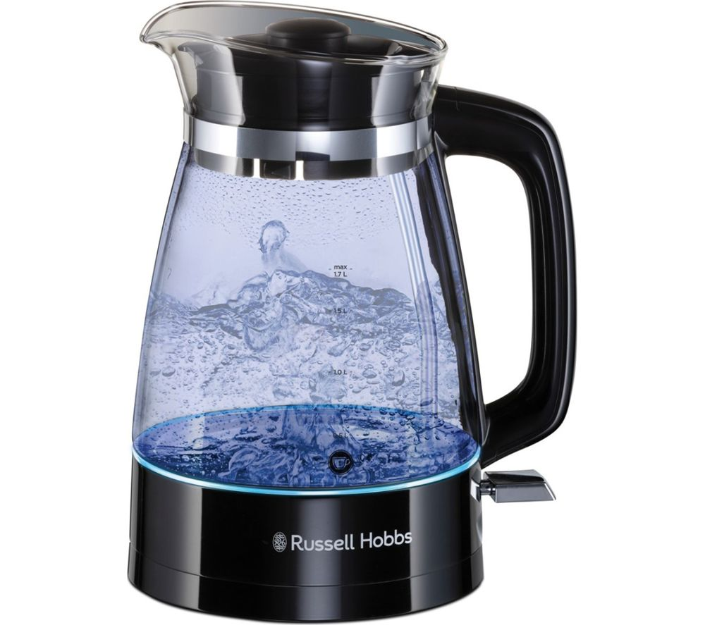
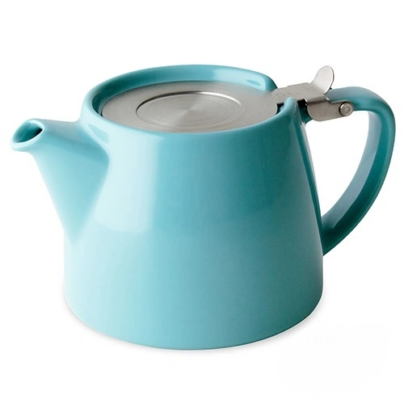
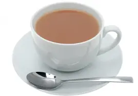

1 How to make a cup of tea.
2 Fill the kettle with as much water as required
-

3 Meanwhile choose your favourite biscuit to accompany your cup of tea. This is a crucial step which separates a good from a great cup of tea.

4 Once the kettle is boiled, place a Barry's teabag into the teapot. Fill the teapot with water.
-

4 Once the tea has been left settle for a few minutes, pour the tea into a mug of your choice. Top off with milk and there you have it! The ultimate cup of tea.
-
